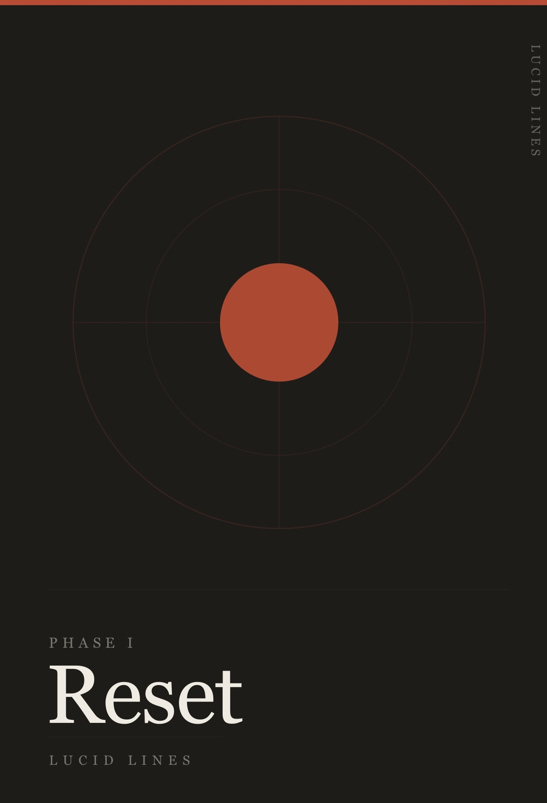
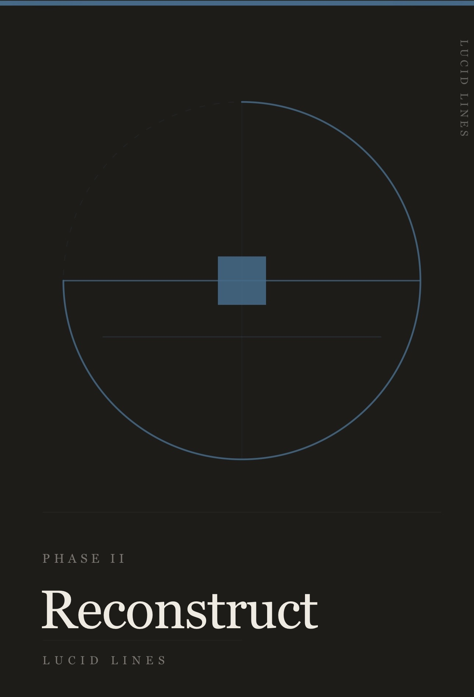
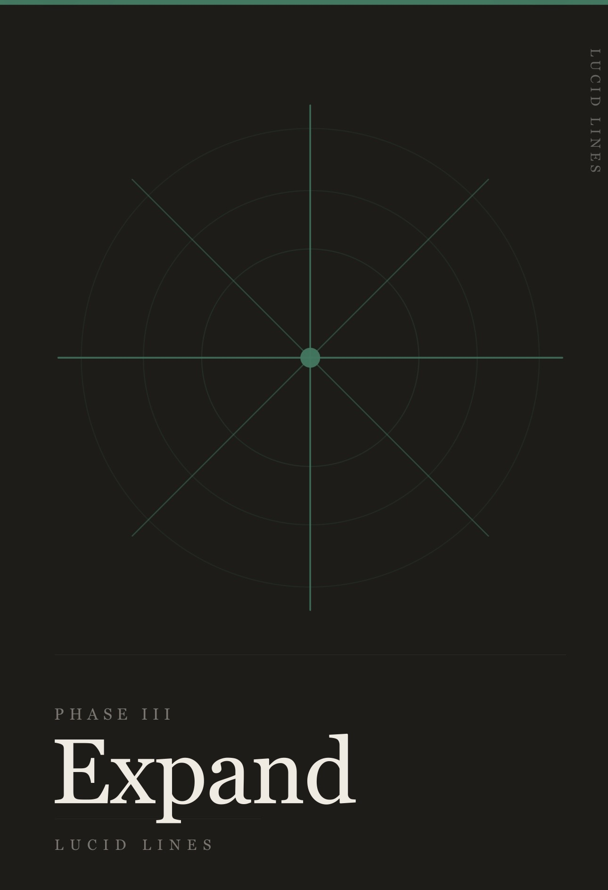

Technology is accelerating. The climate is changing. The systems around us are becoming more complex. Lucid Lines investigates what is worth adapting, what is worth preserving, and how to tell the difference.
Attention, discernment, learning and independent thought.
Regulation, relationships, uncertainty and courage.
Health, movement, food and embodied resilience.
Home, land, community and the systems we inhabit.
Lucid Lines follows questions rather than trends. We read the research, look for human-scale examples, speak to people doing the work, test what can be tested, and separate evidence from opinion and interpretation.



A 90-day structured practice for moving consciously through change.
Three volumes — Reset, Reconstruct and Expand — designed to support clarity, self-knowledge and agency through reflection, inquiry, practice and integration.
“Change is not a problem to be solved. It is a passage to be moved through.”
Secure checkout powered by Stripe.
Research, books, reports, thinkers and tools behind the investigations — kept visible so you can follow the evidence and make up your own mind.
Lucid Lines explores how technology can expand human capability without quietly replacing the thinking, remembering, making and deciding that keep those capabilities alive.